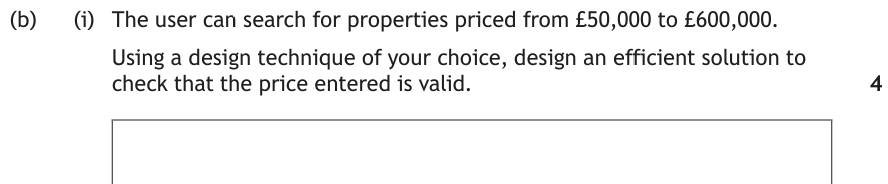
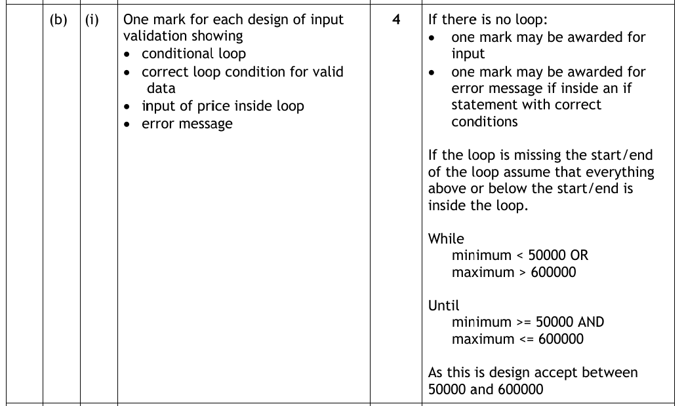
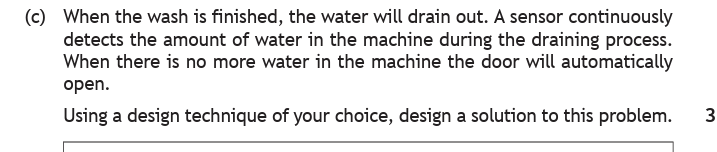
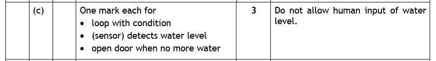
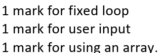
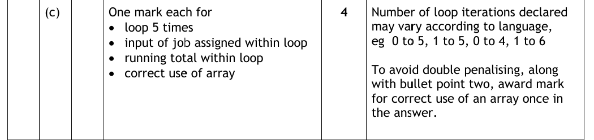
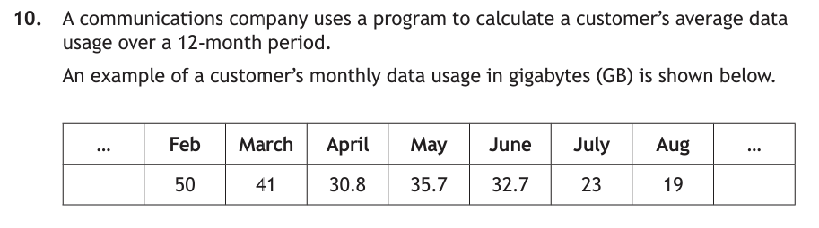
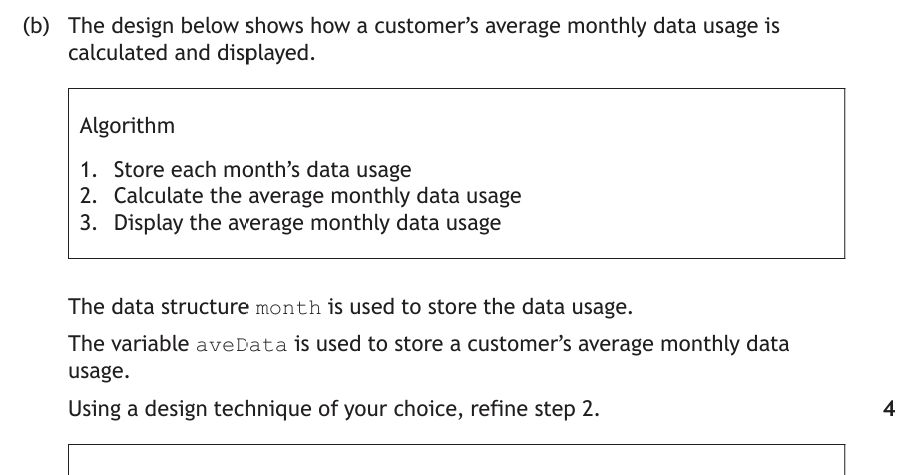
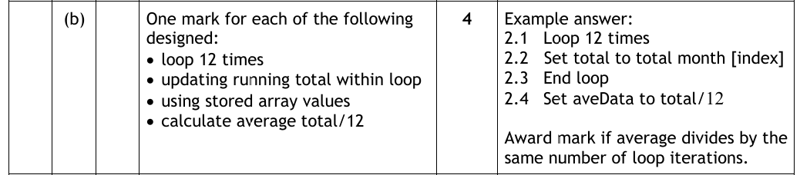

Introduction
Some programming problems come up so often that their solutions have become standard algorithms — recipes that every programmer knows by heart. At National 5 there are three, and they're built entirely from things you've already learned: loops, conditions, variables and arrays. Nothing new — just familiar pieces clicked together in a pattern worth memorising.
These three appear in both the exam and the assignment, so it's worth being able to write each one in your sleep.
Key Terms
Standard Algorithm 1 — Input Validation
Users make mistakes. Ask for an age and someone will type -7, or 300. Input validation checks that input is acceptable — and if it isn't, shows an error and asks again, repeating until the input passes. Note what it's checking: that the data is the right sort (in range, long enough, one of the allowed choices), not that it's actually true. If you claim to be 21, the program takes your word for it.
The recipe uses a conditional loop — because we can't know how many attempts the user will need:
- Ask for the input
- While the input is not acceptable…
- Display an error message
- Ask for the input again
- End loop — the program only gets here with valid input
There are three kinds of check you need to know — a range check, a length check and a restricted choice. It's the same recipe every time; only the condition changes:
age = int(input("Enter your age: "))
while age < 11 or age > 18:
print("Error - age must be between 11 and 18")
age = int(input("Enter your age: "))
print("Your age is acceptable")
password = input("Please enter a new password: ")
while len(password) < 8:
print("Your password must be at least 8 characters long")
password = input("Please re-enter your new password: ")
print("Your password is long enough")
answer = input("Play again? (yes/no): ")
while answer != "yes" and answer != "no":
print("Error - please answer yes or no")
answer = input("Play again? (yes/no): ")
print("Thank you")
Look at the three conditions: a range check tests the value, a length check tests the number of characters (there's len() from pre-defined functions earning its keep), and a restricted choice tests the input against a list of allowed answers. Everything else — error message, ask again — is identical.
Two details that catch people out:
- The input line appears twice — once before the loop (the program needs a first value to test) and once inside it (or the loop could never end). This is one repeat that's allowed!
- The loop condition describes the bad input — we loop while the age is out of range. Writing the condition the wrong way round is a classic logic error.
The other way it appears: REPEAT … UNTIL
Learn the while version — it's the one you'll write. But exam papers sometimes show input validation with a repeat-until loop instead, so you need to recognise it. The logic is flipped: the loop body always runs at least once, and the condition at the bottom describes the good input that lets you escape:
<# WHILE version - loop while the input is BAD #>
RECEIVE number FROM KEYBOARD
WHILE number < 10 OR number > 20 DO
SEND "Error, please enter again" TO DISPLAY
RECEIVE number FROM KEYBOARD
END WHILE
<# REPEAT ... UNTIL version - loop until the input is GOOD #>
REPEAT
RECEIVE number FROM KEYBOARD
IF number < 10 OR number > 20 THEN
SEND "Error, please enter again" TO DISPLAY
END IF
UNTIL number >= 10 AND number <= 20
Now try it on two real past paper questions. One important thing before you start: when a question says "using a design technique of your choice", you're writing a design, not code — so plain wording is fine. "While the price is not between 50000 and 600000" or "add the name to the array" earn the marks without any formal syntax. Jot down your own design before opening each walkthrough.

How to tackle it: "Check the input is valid" is the signal for input validation, and this one is a range check. Four marks means the marker wants the four ingredients of the recipe:
- a conditional loop
- the correct condition — looping while the price is bad: below 50000 OR above 600000
- the input asked again inside the loop
- an error message
Watch the traps: the condition joins its two halves with OR for a while loop (a price can't be both too low and too high), and the input line must appear inside the loop or the program can never escape. And because this is a design, the marking instructions accept plain wording for the boundaries — no need to fuss over £ signs or commas in 600,000.

An example would be:
1 Get price from user
2 While price < 50000 OR price > 600000
2.1 Display "Error - price must be between 50000 and 600000"
2.2 Get price from user
3 End while

How to tackle it: This is the validation loop's shape with a twist — no keyboard. A sensor drives the condition instead of a user, but the pattern is identical: keep looping while the condition holds, escape when it doesn't, then act.
- a loop with a condition — while the sensor detects water
- the sensor doing the detecting inside the loop
- open the door after the loop — only reachable when the water is gone
Watch the trap: the marking instructions explicitly refuse human input of the water level. Writing "ask the user for the water level" turns an automatic sensor system into a questionnaire — no marks. And this is where design wording really pays: "while sensor detects water" is a perfectly acceptable condition. You're describing the logic, not writing Python.

An example would be:
1 While sensor detects water in the machine
1.1 Continue draining the water
2 End while
3 Open the door
Validation Tester
Three live validation loops — one per kind of check. Type real values at each and watch bad input bounce off the condition (red, error, asked again) while good input escapes the loop. Try the boundary values on purpose: 10, 11, 18 and 19 are where the marks live.
Input Validation — Video Explanation
Standard Algorithm 2 — Traversing a 1-D Array
First, a 30-second array recap
An array stores several values of the same type under one name, with each position numbered by an index — and indexes start at 0, not 1:
One position at a time, an array works just like a variable with an index attached: scores[0] is 15, scores[4] is 17. If any of that feels rusty, take five minutes back at the arrays page (and its visualiser) before carrying on.
Visiting every element
Accessing elements one at a time is useful — but the real power of an array is processing every element, and for that you traverse it: use a loop, with the loop variable as the index.
- Start a fixed loop that runs once per element
- Use the element at position [counter]
- End the loop
# An array of seven names
names = ["Archie", "Erika", "Riley", "Matthew", "Lucienne", "Harveer", "Christian"]
# Elements are numbered 0 to 6 - visit and print each one
for counter in range(7):
print(names[counter])
On the first pass counter is 0, so it prints names[0] (Archie). Next pass, names[1] (Erika). The loop variable sweeps through every index in turn — that's the whole trick. Rather than hard-coding the 7, you can let Python count the array for you with range(len(names)) — then the loop still works if the array grows.
names = []
# Fill the array from user input
for counter in range(4):
names.append(input("Please enter a name: "))
# Traverse it to display every name
for counter in range(len(names)):
print(names[counter])
FOR counter FROM 0 TO 6 DO
SEND names(counter) TO DISPLAY
END FOR
This traversal just prints each element — but you can do anything to them as the loop sweeps past. Do some adding along the way and you've built the next standard algorithm.
Here's a past paper question about exactly this — write your own answer before opening the walkthrough.
![Past paper question: Louise is conducting a survey to find out how many hours per week her classmates spend playing computer games. She will survey 100 pupils. The program assigns 100 names to a 1-D array, shown as 101 lines of code: DECLARE name AS ARRAY OF STRING, then RECEIVE name index 0 FROM KEYBOARD, RECEIVE name index 1 FROM KEYBOARD, and so on up to RECEIVE name index 99 FROM KEYBOARD. Part a: Louise realises that writing the code to read the data into the array like this is time consuming and not good practice. Write, using pseudocode or a programming language of your choice, the code to show how the data can be entered into the 1-D array using repetition. 3 marks.](../resources/sdd/worked_examples/n5_stnd_algo_q5.png)
How to tackle it: One hundred nearly-identical RECEIVE lines — the Bart Simpson problem from the loops page, applied to an array. The only thing changing from line to line is the index: 0, 1, 2 … 99. Anything that counts up by one each time is a job for the loop variable — so we traverse the array, filling as we go:
- a fixed loop — 100 pupils, known in advance
- user input inside the loop
- the input stored in the array, with the loop variable as the index
Watch the trap: the indexes run 0 to 99, not 1 to 100 — the hundredth pupil lives at name[99]. And note the question allows pseudocode: "add each name to the array" wording earns the array mark in a design, though since code is invited, showing the index is the safest bet.

An example would be:
1 Loop 100 times
1.1 Receive name[index] from keyboard
2 End loop
or in Python:
name = []
for counter in range(100):
name.append(input("Enter name: "))
Traversal Stepper
The names array as boxes, with the highlight hopping from index 0 to 6 as the loop variable ticks up and each element lands in the output. Then flip to running total mode — the same sweep with one line changed, covering two standard algorithms in one loop.
Standard Algorithm 3 — Running Total
How do you add up ten numbers when you can only handle one at a time? The same way a shop till does: keep a running total. Start the total at 0, and add each value on as it arrives. The recipe:
- Set the total to 0 (initialise — this step is not optional)
- Start a loop
- Get the next value (from the user, or from an array)
- Add it to the total
- End loop, then use the total
It works two ways — without an array (values typed in, used once, forgotten) and with an array (values already stored, added up by index):
# Add up 5 prices typed in by the user
total = 0
for counter in range(5):
price = int(input("Please enter a price: "))
total = total + price
print("The total price is £" + str(total))
# Add up prices already stored in an array
prices = [5, 25, 32, 10, 3]
total = 0
for counter in range(len(prices)):
total = total + prices[counter]
print("The total price is £" + str(total))
Look closely at the array version: it's the traversal from above with one line changed — a traversal that adds instead of prints. That's both standard algorithms in one, and exam questions mix them together like this all the time. The key line is the same in both versions: total = total + … — "the new total is the old total plus this value". And in reference language:
SET total TO 0
FOR counter FROM 0 TO 4 DO
SET total TO total + prices(counter)
END FOR
SEND "The total is " & total TO DISPLAY
total = 0 at the start and the algorithm falls apart — you'd be adding to whatever happened to be in the variable. Initialise first, always.Now two past paper questions — and notice both of them mix the running total with the other algorithms on this page. Try each before opening the walkthrough.
![Past paper question: Sam completes five jobs in July and earns £562.77, £675.44, £287.91, £245.22 and £899.66. The code shown declares total and job1 initially 0.0, then receives job1 to job5 from the keyboard on five separate lines, sets total to job1 plus job2 plus job3 plus job4 plus job5, and displays Total Monthly Earnings with the total. When evaluating this code, it is found to be inefficient. Using a programming language of your choice, re-write Lines 7 to 12 of the code using more efficient constructs. The values for the five jobs should remain stored for use after Line 12. 4 marks.](../resources/sdd/worked_examples/n5_stnd_algo_q2.png)
How to tackle it: Five separate input lines and one long addition — the giveaway of a program crying out for a loop. But read the last sentence carefully: "the values for the five jobs should remain stored". That single sentence forces an array. Five separate variables could be replaced by one reused variable if we only wanted the total — but then the individual values would be lost. Keeping all five means job[0] to job[4].
- a loop that runs 5 times
- input of each job inside the loop, stored in the array
- a running total inside the loop — replacing the long addition on line 12
- correct use of the array, with the loop variable as the index
Look at what this answer actually is: filling an array (Louise's survey) and a running total happening in the same loop. Exam questions stack the standard algorithms like this constantly.

The question says "a programming language of your choice", so here it is in Python:
job = [0.0] * 5
total = 0
for counter in range(5):
job[counter] = float(input("Enter job earnings: "))
total = total + job[counter]
Notice job[counter] — using the loop variable as the index is what earns the "correct use of array" mark. Write job without the index and the marker can't see an array being used at all.
A design-style answer is also acceptable:
1 Loop 5 times
1.1 Receive job[index] from keyboard
1.2 Set total to total + job[index]
2 End loop


How to tackle it: "Refine step 2" means breaking "calculate the average" into its real steps. An average is a running total divided by the count — and here the twist is that the data is already stored in the month array by step 1. So this is a traversal feeding a running total:
- a loop that runs 12 times — one pass per month
- a running total updated inside the loop
- using the stored array values —
month[index], not new input - the average calculated after the loop: total ÷ 12, stored in
aveData
Watch the traps: no RECEIVE lines — step 1 already stored the data, so asking the user again throws away the "stored array values" mark. And divide once, after the loop ends — by the same number as the loop runs. (Recognise aveData? It's the very value that gets rounded to 23.3 in part c) of this question, on the Pre-Defined Functions page.)

An example would be:
2.1 Loop 12 times
2.2 Set total to total + month[index]
2.3 End loop
2.4 Set aveData to total / 12
The Shop Till
The prices array feeding a till, one value at a time, with the key line shown substituting real numbers each pass (total = 30 + 32 → 62). Then switch to "Forgot to initialise" — the till still holds £70 from the last customer, and the final bill shows exactly why total = 0 is not optional.
Practice Questions
These don't copy the worked examples — each one makes you apply the recipe in a new shape. Remember: "a design technique of your choice" means plain wording is fine. Write your answer down before opening the marking instructions.
(a) State the standard algorithm used in the design below.
1. Set raised to 0 2. Loop for each runner 2.1 Get donation from runner 2.2 Add donation onto raised 3. End loop 4. Display raised
(b) State the standard algorithm used in the design below.
Marking Instructions
(a) Running total (1 mark) — a total set to 0, then added to inside a loop. The fingerprint is line 2.2: raised appears on both sides of the addition.
(b) Input validation (1 mark) — the No branch shows an error message and loops back to ask for the input again, repeating until the PIN passes.
A museum's ticket kiosk asks visitors to type their ticket type, which must be either "adult" or "child".
Using a design technique of your choice, design an efficient solution to check that the ticket type entered is valid.
Marking Instructions
One mark for each of the following designed:
- a conditional loop
- correct loop condition (while ticketType is not "adult" AND not "child")
- input of the ticket type inside the loop
- an error message
Sample answer:
1 Get ticketType from user
2 While ticketType != "adult" AND ticketType != "child"
2.1 Display "Error - please enter adult or child"
2.2 Get ticketType from user
3 End while
This is a design, so plain wording like "while the answer is not adult or child" is acceptable. Note the join is AND, not OR — the input is only bad when it fails both comparisons. A range check loops on OR; a restricted choice loops on AND. Writing OR here would loop forever, whatever the user types.
A smart kettle heats water. A sensor continuously detects the temperature of the water while it heats. When the water reaches 100°C, the kettle automatically switches off.
Using a design technique of your choice, design a solution to this problem.
Marking Instructions
One mark for each of the following:
- a loop with a condition
- the sensor detecting the temperature
- switching off when the water reaches 100°C
Sample answer:
1 While sensor detects temperature below 100
1.1 Continue heating the water
2 End while
3 Switch off the kettle
Do not allow human input of the temperature — the sensor drives the condition. Notice the loop runs while the water is below the target, the opposite direction from the washing machine draining while water remains. Read the story, then write the condition to match it.
A weather station stores 24 hourly temperature readings in the array temps.
Using a design technique of your choice, design a solution to display every reading in the array alongside its hour number.
Marking Instructions
One mark for each of the following:
- a fixed loop that runs 24 times
- use of the array with the loop variable as the index
- the display inside the loop (accept the loop variable as the hour number)
Sample answer:
1 Loop 24 times
1.1 Display index and temps[index]
2 End loop
No total is needed — this is a traversal on its own. The readings already exist, so there is no input either: the loop simply visits index 0 to 23 and displays as it goes.
A swimming coach wants a program that stores the lap times of the 8 swimmers in a race in an array, then displays the average lap time.
Using a design technique of your choice, design a solution to this problem.
Marking Instructions
One mark for each of the following designed:
- a loop that runs 8 times
- input of each lap time into the array within the loop
- a running total within the loop
- the average calculated after the loop (total ÷ 8) and displayed
Sample answer:
1 Set total to 0
2 Loop 8 times
2.1 Receive time[index] from keyboard
2.2 Set total to total + time[index]
3 End loop
4 Set average to total / 8
5 Display average
Unlike the data usage question, nothing is stored yet — so the input goes into the array inside the loop. This one design uses all three standard algorithms' ingredients: filling an array, a running total, and dividing once after the loop.